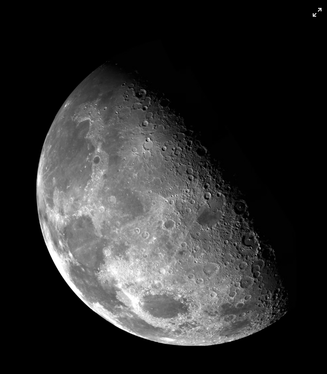

Descubra curiosidades fascinantes sobre o mundo ao nosso redor!
Prepare-se para se surpreender com fatos incríveis e pouco conhecidos.

Você sabia?
O polvo tem três corações e o sangue azul!

Fato curioso
A Lua se afasta da Terra cerca de 3,8 cm por ano.
Incrível!
Existem mais estrelas no universo do que grãos de areia em todas as praias da Terra.